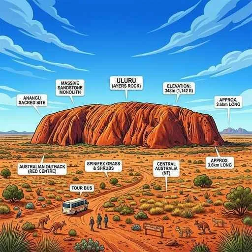
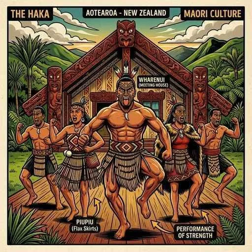

7. オセアニア州
オセアニア州は、世界最小の大陸であるオーストラリア大陸と、火山と緑の豊かなニュージーランド、そして太平洋に浮かぶ無数の美しい島々から構成されています。独自の自然環境や先住民の文化、イギリスとの強い歴史的結びつきからアジア諸国への接近、そして地球温暖化がもたらす深刻な環境問題までを分かりやすく解説します！
1. オーストラリアの自然環境と人々の工夫
オーストラリアは、大昔から他の大陸と隔絶されていたため、コアラやカンガルーなどの独自の有袋類・生態系が発達しました。

図1：オーストラリア内陸部にある世界最大級の一枚岩「ウルル（エアーズロック）」
① 地形と気候
- グレートディバイディング山脈：大陸の東側を南北に走る、なだらかな山脈です。
- グレートバリアリーフ：北東岸に広がる、世界最大のサンゴ礁地帯。
- ウルル（エアーズロック）：内陸の乾燥した平原にそびえ立つ、世界最大級の巨大な一枚岩。先住民の聖地とされています。
- 気候の特色：大陸の約6割が乾燥帯（砂漠やステップ）に属します。南半球にあるため日本とは季節が逆になりますが、日本と経度が近いため時差が非常に少ない（1〜2時間）という特徴があります。国旗にはイギリスの結びつきを示すユニオンジャックと、南半球の象徴である南十字星（サザンクロス）が描かれています。
- 乾燥地の生活工夫：極度に暑く乾燥した地域（クーバーペディなど）では、地上の熱を避けて涼しく過ごすために、地面を掘り下げて作った「地下住居（ダグ・アウト・ハウス）」が利用されています。
2. 歴史的背景と「多文化社会」への転換
- 先住民と植民地支配：オーストラリアには、独自の文化を持つ先住民アボリジニが暮らしていましたが、18世紀後半からイギリスの植民地支配が始まり、多くの土地を奪われました。
- 白豪主義から多文化社会へ（超重要！）：建国後、オーストラリアは白人以外の移民を厳しく制限する「白豪主義（はくごうしゅぎ）」という政策を長年とっていました。しかし、1970年代にこれを完全に廃止し、現在は多様な民族や文化を互いに尊重して共生する「多文化社会」へと大きく方針を転換しました。
- フライングドクターとワーキングホリデー：広大な内陸部で医療を提供するため、飛行機を使って医師が巡回診療を行う「フライングドクター」の制度があります。また、若者が働きながら長期滞在できるワーキングホリデーの渡航先としても極めて人気が高いです。
3. 牧畜・豊富な資源・貿易相手国の変化
オーストラリアは、世界有数の羊毛・食肉の生産国であり、豊富な地下資源を輸出する資源大国でもあります。

図2：ニュージーランドの先住民「マオリ」の力強い伝統文化
- 掘り抜き井戸による牧畜：乾燥した内陸部で、塩分を含む地下水を掘り抜き井戸（ほりぬきいど）で汲み上げ、塩分に強い羊や牛の放牧を大規模に行っています。
- 豊富な地下資源：
- 鉄鉱石：北西部で大規模に「露天掘り」され、日本などに多く輸出されています。
- 石炭：東部で豊富に採掘される燃料資源。
- ボーキサイト：北部で産出される、アルミニウムの原料となる鉱石。
- 貿易相手国の劇的な変化：1960年代までは、歴史的なつながりからイギリスが最大の貿易相手国でした。しかし、イギリスがEUに加盟して結びつきが薄れたことや地理的な近さから、現在は中国や日本などのアジア諸国が最大の貿易相手国となっています。アジア太平洋地域の経済協力組織「APEC」にも深く関わっています。
4. ニュージーランドと太平洋の島々
- ニュージーランド：火山や地震活動が盛んな環太平洋造山帯に位置します。先住民はマオリと呼ばれ、ラグビーの試合前に行う伝統の舞「ハカ」などが有名です。豊かな牧草地を利用した酪農が盛んで、人口よりも羊の飼育数の方が圧倒的に多い国です。首都はウェリントン。
- 太平洋の島々の区分：太平洋の島々は、位置と文化的特徴から、北西部のミクロネシア、南西部のメラネシア、東部一帯のポリネシアの3つの地域に大別されます。
- 海面上昇の危機：サンゴ礁からなる標高の低い島国であるツバルやキリバスなどは、地球温暖化に伴う海面上昇によって、国土が水没する危機に直面しています。これら島々にとって、美しい自然を生かした観光業が貴重な外貨獲得源です。
5. 【日本地理への橋渡し】地形と自然現象の基礎
世界地理の最後に、大地の変化や海岸・河川が作る基本的な地形の語句をおさらいし、日本地理の学習へと繋げましょう！
- 造山帯（ぞうざんたい）：火山活動や地震が活発で、高い山脈が形成される地帯。ヨーロッパのアルプスからアジアのヒマラヤへ続くアルプス・ヒマラヤ造山帯と、太平洋を取り囲む環太平洋造山帯が代表例です。地震が発生した地下の場所は震源（しんげん）と呼ばれます。
- 海岸・大地の地形：
- リアス海岸：入り江と岬が複雑に入り組んだ鋸刃状の海岸。三陸海岸などに代表されます。
- 砂丘（さきゅう）：風で運ばれた砂が堆積してできた丘状の地形。鳥取砂丘が有名です。
- カルスト地形：雨水などによって侵食された石灰岩台地。山口県の秋吉台が代表です。
- 河川が作る地形：
- 扇状地（せんじょうち）：川が山地から平地に出る谷口に、土砂が扇形に積もってできる地形。水はけが良いため果樹園に利用されます。
- 三角州（さんかくす）：川が海や湖に注ぐ河口付近に、細かい土砂が積もってできる平坦な地形。水田や都市に利用されます。
- 盆地（ぼんち）：周囲を山に囲まれた、低く平らな土地。
- 海流と海底地形：
- 黒潮（日本海流）：南から北へ流れる温暖な暖流。
- 親潮（千島海流）：北から南へ流れる寒冷な寒流。
- 潮目（しおめ）：暖流と寒流がぶつかり、プランクトンが豊富で良い漁場となる海域。
- 大陸棚（たいりくだな）：陸地の周囲に広がる、深さ約200mまでの平坦で浅い海底。日光が届きやすく好漁場となります。
🔥 定期テスト対策・暗記のコツ
① 白豪主義から多文化社会へ（歴史的変遷）
かつて行われていた白人優先の移民制限政策「白豪主義」と、その反省から生まれた多様な民族の共生を目指す「多文化社会」の対比と言葉は確実に覚えましょう！
② 貿易相手国の変化の記述（よく出る！）
「オーストラリアの貿易相手国がイギリスからアジア諸国（中国・日本など）に変化したのはなぜか？」という問題に対しては、「地理的に近いアジア諸国との経済的な結びつきを重視するようになったため」や「イギリスがEUに加盟したため」と説明できるようにしておきましょう。
③ 地下資源の分布と掘削方法
「北西部 ➔ 鉄鉱石（露天掘り）」「東部 ➔ 石炭」「北部 ➔ ボーキサイト（アルミ原料）」の位置関係を確実に頭に入れましょう。
④ 扇状地と三角州の違い（超最重要！）
「川が山から平地に出る場所 ➔ 扇状地（果樹園に利用）」「川が海や湖に流れ出る河口 ➔ 三角州（水田や都市に利用）」の場所と用途の違いは、テストでほぼ毎回出題される必須事項です！